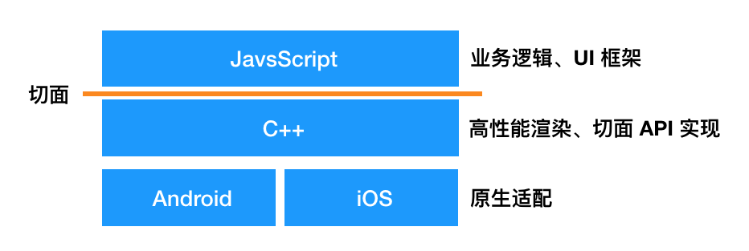
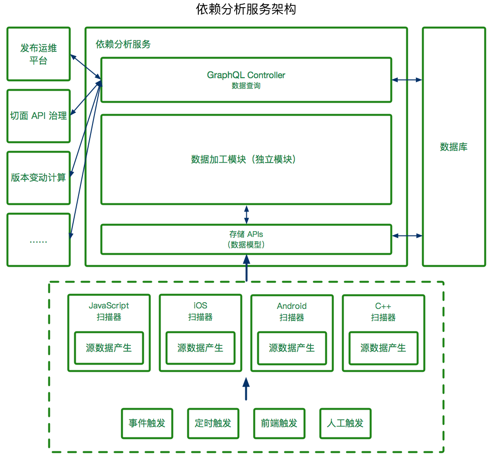
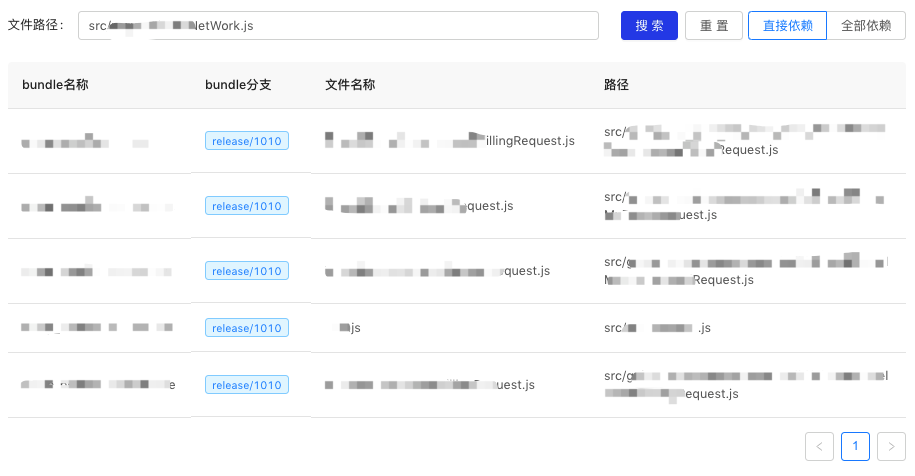
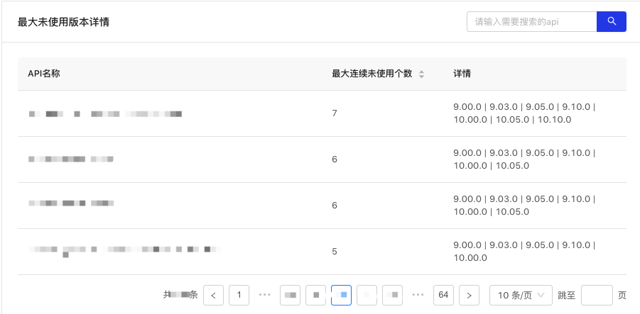
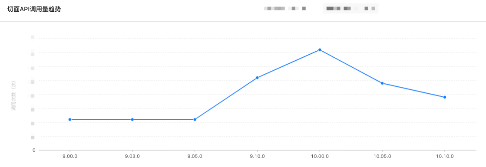
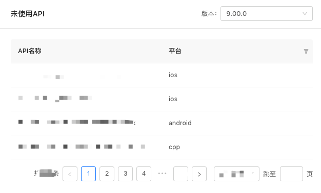

一、背景
高德 App 经过多年的发展，其代码量已达到数百万行级别，支撑了高德地图复杂的业务功能。但与此同时，随着团队的扩张和业务的复杂化，越来越碎片化的代码以及代码之间复杂的依赖关系带来诸多维护性问题，较为突出的问题包括：
不敢轻易修改或下线对外暴露的接口或组件，因为不知道有什么地方对自己有依赖、会受到影响，于是代码变得臃肿，包大小也变得越来越大；
模块在没有变动的情况下，发布到新版本的客户端时，需要全量回归测试整个功能，因为不知道所依赖的模块是否有变动；
难以判断 Native 从业务实现转变为底层支撑的趋势是否合理，治理是否有效；
这些问题已经达到了我们必须开始治理的程度了，而解决此类问题的关键在于需要了解代码间的依赖关系。
二、高德 APP 平台架构
为了消除一些疑惑，在讨论依赖分析的实现前，先简单说明一下高德 APP 的平台架构，以便对一些名词和场景有一些背景了解。

高德 APP 从语言平台上可以分为 4 个部分，JS 层主要负责业务逻辑和 UI 框架；中间有 C++层做高性能渲染（主要是地图渲染），同时实现了一些切面 API，这样可以在双端只维护一套逻辑了；Android 和 iOS 层主要作为适配层，做一些操作系统接口的对接和双端差异化的（尽可能）抹平。
这里的切面是指 JS 层与 Native/C++ 层的分界线，这里会实现一些切面 API，也就是 JS 层与 Native/C++ 层交互的一系列接口，如蓝牙接口、系统信息接口等，由 Native/C++ 层来实现接口，然后往 JS 层暴露，由 JS 层调用。
三、基础实现原理
整个项目最基本也是最重要的数据就是依赖关系。所谓依赖关系，最简单的例子就是文件 A 依赖文件 B 的某个方法。
要将这个关系查出来，一般来说需要经过两个步骤。
第一步：编译源码，获得 AST
遍历所有源码，通过语法分析，生成抽象语法树（Abstract Syntax Tree, AST）。以 JS 扫描器为例，我采用了 typeScript 模块作为编译器，它同时支持 JS(X)、TS(X)，通过 ts.createSourceFile 来生成 AST。除 JS 外，iOS 采用的是 CLang，Android 采用的是字节码分析，C++ 采用的是符号表分析。
第二步：路径提取，依赖寻路
从 AST 上我们可以找到所有的引用和暴露表达式，以 JS 为例就是 import/ require 和 export/ module.exports。寻找表达式的方法就是递归地遍历所有语法节点，在 JS 中我采用了 TypeScript 编译器提供的 ts.forEachChild 来进行遍历，通过 ts.SyntaxKind 进行语法节点类型的识别。
找到表达式后，通过依赖路径找到具体的依赖文件。以 JS 为例，我们可以通过 const { identifierName } = require('@bundleName/fileName') 的方式引用其它模块（bundleName）的某个文件（fileName）的某些标识符（identifierName），我们就需要根据这表达式来定位到具体的标识符。
跨切面的依赖会需要多做一步，需要将切面 API 分为调用侧和声明侧，在 JS 层通过 AST 分析出调用侧数据，在 Native/C++ 层分析出声明侧数据（对应到具体实现切面 API 的标识符），将调用侧和声明侧数据通过版本号关联到一起，即可实现全依赖链路贯通。
我们把这个关系以及一些元数据保存下来，就可以作为源数据来作数据分析了。
四、项目架构
整体项目架构如下：

我们使用 Node.js 和集团的 egg.js 框架搭建了本依赖分析工程服务，并且考虑到数据使用场景的多变性和多样性，我选用了 GraphQL 作为查询接口，输出我们定义的数据类型，由上层应用自行封装，如果出现多个上层应用同时需要类似的数据，我们也会进行整合复用。
其中数据加工模块是独立模块，由 Node.js 编写，支持其它项目复用，未来会计划在 IDE 等项目复用。
左侧是我们的数据消费方，这里只列举了几个；右侧是我们的数据库，用于储存分析结果；下侧是四端扫描器和触发器，四端分别对自己平台的源码进行源数据生产，触发器支持发布流程触发事件触发、定时触发、前端触发（应用侧前端，不是 Web 前端）和人工触发等。
五、应用场景及实现原理
全链路依赖关系的使用场景有无穷的想象力，这里挑几个来举例。
影响范围判断（逆向依赖分析）
第一个我们能想到的应用场景就是影响范围判断，这也是我们这个项目的第一个抓手。大家都能想到，如果维护一个接口（或组件），我们会发现当越来越多地方用的时候，迭代它的风险会随之而越来越高，我们需要明确地知道到底有哪些地方调用了这个接口，以确定到底要回归测试多少功能、要怎么做发布、怎么做兼容等。而这就需要进行逆向依赖分析了。
逆向依赖是相对扫描器中分析出来的依赖关系的，扫描器分析出来的我们称之为正向依赖，它主要表示「此模块依赖了哪些别的模块」；而逆向依赖则指的是「此模块被哪些模块依赖了」。所以很自然地，我们的逆向依赖就是基于正向依赖关系做的数据加工。

（逆向依赖查询页面）
基于逆向依赖数据，结合多个版本的数据，我们还能算出「连续未被引用的版本数」，以衡量下线接口的安全性。

（一些切面 API 的连续未被使用的版本数）
组件库、框架和切面 API 的维护者是这个能力的重度用户，这个能力为他们带来了数据支撑，明确了自己的修改将会影响多少的其它模块，从而进行变更、发布决策和回归测试。
版本间变动分析
版本提测时，我们可以对两个版本进行依赖链比对，分析出文件的变动及其整个影响链路，为 QA 提供一些数据支持，能更精确地知道有哪些功能要进行回归测试，有哪些不需要。
版本间变动分析有很多场景，除了正常的版本迭代的场景之外，还有一个常见的场景：模块在未变动的情况下被集成到新版本的高德 APP 中，那就会出现「发布代码不变，而所依赖的其它模块有变动」的情况，尤其有是 Native/C++ 和公用模块。测试环境需要知道的是，当前模块所依赖的其它模块到底有哪些变动、这些变动对此模块的影响是什么、需要回归测试哪些功能点等。
这个数据的主要消费方是 QA 同学，他们利用这个数据可以提高测试效率，也能发现漏考虑的回归点。
趋势变化判断
前面也提到过，由于高德 APP 时间跨度很大，以及之前未进行限制，所以我们有部分业务逻辑代码仍然是通过 Native 来实现的，我们希望逐渐迁移到 JS 或 C++ 层实现，Native 仅作适配。
而要判断这个治理的进度和效果，需要从两个方面的数据来支撑，一是各平台代码行数，这个我们另有专门的服务做，暂且不提；二是接口趋势。接口趋势也分为调用侧和声明侧两种，按照我们治理的方向，我们期望的效果应该是：一条 Native 业务切面 API 的调用量按版本/时间不断减少的曲线，当一些 API 的调用量为 0 后就可以把 API 下线掉，这样就会随之出现另一条曲线——Native 业务切面 API 的声明量也不断减少。

（从某版本开始就不断减少调用的切面 API）

（某版本未被使用的切面 API）
进行架构治理、切面 API 治理的同学是这些数据的主要消费方，有了这些数据他们就能确定架构治理的趋势是否合理、是否能下线某切面 API 等。
包大小优化——无用、重复文件查找
我们也为包大小优化作了贡献。根据依赖关系数据，我们可以找出一些没有被引用或者内容完全一样（md5 值相同）的文件，这些文件也占用了不少体积。
我们利用依赖分析工程找出了上千张这样的图片，@1x @2x @3x 文件是重灾区，有很多假装自己是另一个清晰度的图片被我们揪出来了（我们甚至因此推动了设计师出图标准化和增加了检验工具）。
六、写在最后
以上便是高德全链路依赖分析工程的基本概述，在具体的实现当中，会有无数的细节需要处理，如各种历史遗留问题、多级版本处理产生指数级的代码快照、变动分析产生指数级的分析结果等，其中也涉及到不少编译原理、数据结构与算法（尤其是图结构）等知识，非常考验编程能力和权衡能力，以及最重要的——韧性。欢迎大家一起讨论，一起迸发新的想法、新的场景！